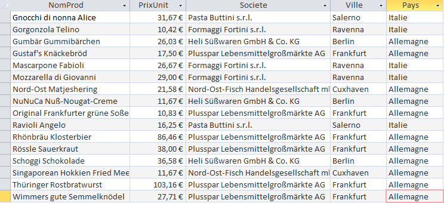

Boissons/Desserts
| Énoncé | Combien y a-t-il des produits correspondants vendus 50€ ou plus ? On veut les connaître avec leur pays d’origine. |
|---|---|
| Interprétation | Cette requête montre les produits de catégorie Desserts et Boissons dont le prix unitaire est supérieur ou égal à 50. Elle fournit également des informations sur le numéro du fournisseur et le pays d'origine de ce fournisseur. Elle sert ainsi à donner une information aux clients sur les produits chers. Il n’y a quasiment que des boissons. Les prix les plus élevés sont des alcools, on pourrait préciser le % d’alcool présent pour préserver la santé des clients. |
| Résultat |  |
| SQL généré |
SELECT Fournisseur.Pays, Produit.NomProd, Produit.PrixUnit
FROM Fournisseur INNER JOIN (Categorie INNER JOIN Produit ON Categorie.CodeCateg = Produit.CodeCateg) ON Fournisseur.NoFour = Produit.NoFour
WHERE (((Produit.PrixUnit)>=50) AND ((Categorie.NomCateg) In ('Desserts','Boissons')))
GROUP BY Fournisseur.Pays, Produit.NomProd, Produit.PrixUnit, Produit.CodeCateg;
|
| Énoncé | Quels sont les pays de provenance de ces catégories ? |
|---|---|
| Interprétation | Cette requête montre les pays de provenance des produits supérieurs ou égal à 50€ trouvés dans la requête précédente. Ainsi, on pourrait tenter de trouver un lien entre ces pays et le fait qu’ils vendent de l’alcool à des prix vraiment élevés. |
| Résultat | |
| SQL généré |
SELECT DISTINCT Fournisseur.Pays
FROM (Produit
INNER JOIN Fournisseur ON Produit.NoFour = Fournisseur.NoFour)
INNER JOIN Categorie ON Produit.CodeCateg = Categorie.CodeCateg
WHERE Produit.PrixUnit >= 50 AND Categorie.NomCateg IN ('Desserts', 'Boissons');
|